2 Kinematics
2.1 Equations of Motion
Learning objectives
By the end of this chapter, you should be able to:
- distinguish distance from displacement and speed from velocity;
- define acceleration and use a consistent sign convention;
- interpret displacement-time, velocity-time and acceleration-time graphs;
- select and apply the equations of uniformly accelerated motion;
- analyse free fall and vertical motion under gravity;
- resolve projectile motion into independent horizontal and vertical components;
- obtain instantaneous values from graph gradients and use graph areas correctly.
2.1.1 Distance, displacement, speed and velocity
| Quantity | Definition | SI unit | Nature |
|---|---|---|---|
| distance | total length of the path travelled | m | scalar |
| displacement \(s\) | change in position in a specified direction | m | vector |
| speed | rate of change of distance | m s\(^{-1}\) | scalar |
| velocity \(v\) | rate of change of displacement | m s\(^{-1}\) | vector |
| acceleration \(a\) | rate of change of velocity | m s\(^{-2}\) | vector |
Average speed and average velocity are not interchangeable:
\[\text{average speed}=\frac{\text{total distance}}{\text{total time}},\qquad \text{average velocity}=\frac{\text{total displacement}}{\text{total time}}.\]
A journey can have a non-zero average speed but zero average velocity, for example when an object returns to its starting point.
2.1.2 Acceleration and sign conventions
Acceleration is the rate of change of velocity:
\[a=\frac{\Delta v}{\Delta t}=\frac{v-u}{t}.\]
Acceleration can be caused by a change in speed, a change in direction, or both. A negative acceleration does not automatically mean that an object is slowing down; it means that the acceleration acts in the negative direction chosen for the calculation.
Choose the positive direction before substituting values. For vertical motion, if upward is positive, then:
- upward displacement and velocity are positive;
- downward displacement and velocity are negative;
- acceleration due to gravity is \(a=-g\).
Use \(g=9.81\ \mathrm{m\,s^{-2}}\) unless the question specifies another value.
2.1.3 Uniformly accelerated motion
For constant acceleration only:
\[v=u+at\] \[s=ut+\frac12at^2\] \[v^2=u^2+2as\] \[s=\frac{u+v}{2}t\]
Here \(u\) is initial velocity, \(v\) is final velocity, \(a\) is acceleration, \(s\) is displacement and \(t\) is time.
| Missing quantity | Useful equation |
|---|---|
| \(s\) | \(v=u+at\) |
| \(v\) | \(s=ut+\frac12at^2\) |
| \(t\) | \(v^2=u^2+2as\) |
| \(a\) | \(s=\frac{u+v}{2}t\) |
Do not use these equations when acceleration varies. In that situation, use graphs, calculus, numerical data or an explicitly stated model.
2.1.4 Motion graphs
Displacement-time graphs
- Gradient gives velocity.
- A horizontal line represents zero velocity.
- Increasing gradient means increasing speed.
- The gradient of a tangent gives instantaneous velocity on a curve.
Velocity-time graphs
- Gradient gives acceleration.
- Signed area between the graph and the time axis gives displacement.
- Area below the time axis represents displacement in the negative direction.
- Total distance is found by adding the magnitudes of all areas.
Acceleration-time graphs
- Signed area gives change in velocity.
- A horizontal line represents constant acceleration, not constant velocity.
Always read the axis label carefully: a speed-time graph cannot show direction, whereas a velocity-time graph can contain negative values.
2.1.5 Free fall and vertical motion
In free fall, gravity is the only significant force. Near the Earth’s surface and with air resistance neglected, acceleration is constant and downward.
At the highest point of a vertical launch:
- instantaneous vertical velocity is zero;
- acceleration is still \(g\) downward;
- the object immediately begins to gain downward velocity.
For an object returning to its launch height with negligible air resistance, the time of ascent equals the time of descent and the final speed equals the launch speed, but the velocity has the opposite sign.
2.1.6 Projectile motion
Resolve the initial velocity \(u\) at angle \(\theta\) into components:
\[u_x=u\cos\theta,\qquad u_y=u\sin\theta.\]
With negligible air resistance:
- horizontal acceleration is zero, so \(v_x=u\cos\theta\) is constant;
- vertical acceleration is \(-g\), so \(v_y=u\sin\theta-gt\);
- horizontal and vertical motions have the same time \(t\);
- the resultant velocity is found from \(v=\sqrt{v_x^2+v_y^2}\) and its direction from trigonometry.
The curved trajectory is produced by constant horizontal velocity combined with uniformly accelerated vertical motion.
2.1.7 Problem-solving checklist
- Draw a simple diagram and choose positive directions.
- List the known values of \(u\), \(v\), \(a\), \(s\) and \(t\) with signs and units.
- For projectiles, separate horizontal and vertical information before calculating.
- Select an equation that contains the required quantity and avoids an unknown you do not have.
- Check whether the acceleration is genuinely constant.
- Check the final sign, unit and physical scale of the answer.
Multiple Choice
题干、数据与选项均整理自原始专题 PDF。含图选择题只使用可从 PDF 独立提取的完整图像对象。
Easy · 7 questions
Example 1 · 2.1 MC Easy Q1
An object moves directly from X to Z. In a shorter time, a second object moves from X to Y to Z. Which statement about the two objects is correct for the journey from X to Z?
Example 2 · 2.1 MC Easy Q2
An experiment is done to measure the acceleration of free fall of a body from rest. Which measurements are needed?
Example 3 · 2.1 MC Easy Q3
Which feature of a graph allows acceleration to be determined?
Example 4 · 2.1 MC Easy Q4
The velocity of an object during the first five seconds of its motion is shown on the graph. What is the displacement of the object in this time?
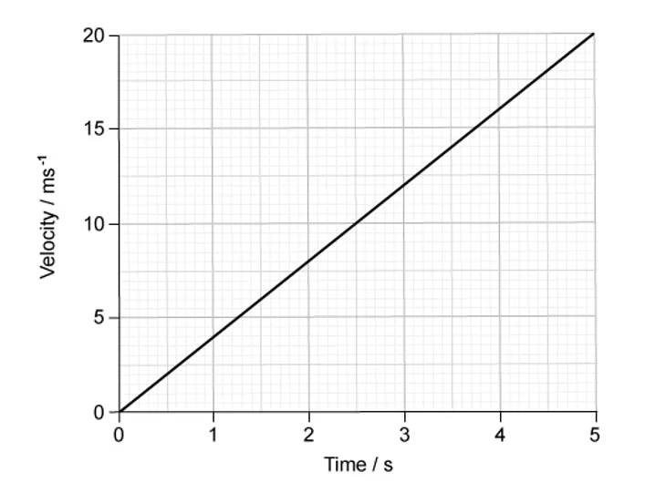
Example 5 · 2.1 MC Easy Q5
The variation with time \(t\) of the distance \(s\) moved by a body is shown below. What can be deduced from the graph about the motion of the body?
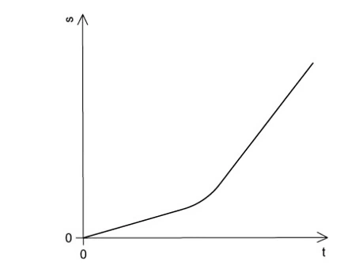
Example 6 · 2.1 MC Easy Q6
An object is thrown with velocity \(7.1\ \mathrm{m\,s^{-1}}\) vertically upwards on the Moon. The acceleration due to gravity on the Moon is \(1.62\ \mathrm{m\,s^{-2}}\). What is the time taken for the object to return to its starting point?
Example 7 · 2.1 MC Easy Q7
An insect jumps with an initial vertical velocity of \(1.5\ \mathrm{m\,s^{-1}}\), reaching a maximum height of \(4.5\times10^{-2}\ \mathrm{m}\). Assume the deceleration is uniform. What is the magnitude of the deceleration?
Medium · 7 questions
Example 8 · 2.1 MC Medium Q2
A bullet is fired horizontally with speed \(v\) from a rifle. For a short time \(t\) after leaving the rifle, the only force affecting its motion is gravity. The acceleration of free fall is \(g\). What is the value of \(\dfrac{\text{horizontal distance travelled in time }t}{\text{vertical distance travelled in time }t}\)?
Example 9 · 2.1 MC Medium Q3
The acceleration of free fall on the Moon is one-sixth of that on Earth. On Earth it takes time \(t\) for a stone to fall from rest a distance of \(2\ \mathrm{m}\). What is the time taken for a stone to fall from rest a distance of \(2\ \mathrm{m}\) on the Moon?
Example 10 · 2.1 MC Medium Q4
A stone is thrown upwards and follows a curved path. Air resistance is negligible. Why does the path have this shape?
Example 11 · 2.1 MC Medium Q5
A train passes through a station at a constant speed of \(20\ \mathrm{m\,s^{-1}}\). A second train is at rest at the station. It begins to leave the station with a uniform acceleration of \(1.0\ \mathrm{m\,s^{-2}}\) just as the first train goes past. How much time passes before the second train overtakes the first train?
Example 12 · 2.1 MC Medium Q6
The graph shows how the speed \(v\) of a sprinter changes with time \(t\) during a \(100\ \mathrm{m}\) race. What is the best estimate of the maximum acceleration of the sprinter?
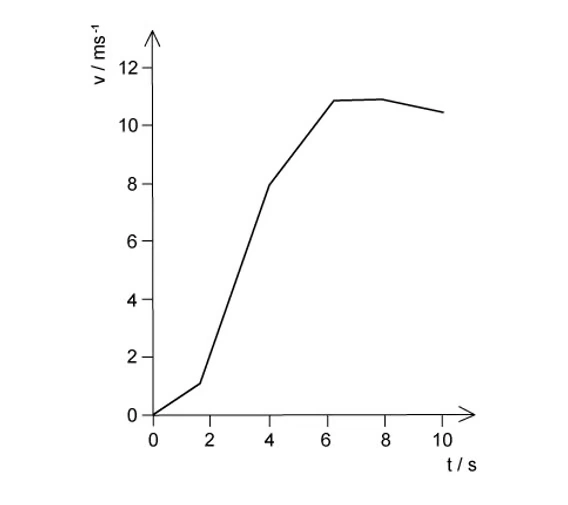
Example 13 · 2.1 MC Medium Q8
In a cathode-ray tube, an electron is accelerated uniformly in a straight line from a speed of \(4\times10^5\ \mathrm{m\,s^{-1}}\) to one tenth of the speed of light over a distance of \(10\ \mathrm{mm}\). What is the acceleration of the electron?
Example 14 · 2.1 MC Medium Q9
A projectile is fired at an angle \(a\) to the horizontal at a speed \(u\). What are the vertical and horizontal components of its velocity after a time \(t\)? Assume that air resistance is negligible. The acceleration of free fall is \(g\).
Hard · 6 questions
Example 15 · 2.1 MC Hard Q1
A body having uniform acceleration \(a\) increases its velocity from \(u\) to \(v\) in time \(t\). Which expression would not give a correct value for the body’s displacement during time \(t\)?
Example 16 · 2.1 MC Hard Q2
A cannon fires a cannonball with an initial speed \(v\) at an angle \(a\) to the horizontal. Which equation is correct for the maximum height \(H\) reached?
Example 17 · 2.1 MC Hard Q5
Two markers \(M_1\) and \(M_2\) are set up a vertical distance \(h\) apart. A steel ball is released at time zero from a point a distance \(x\) above \(M_1\). The ball reaches \(M_1\) at time \(t_1\) and reaches \(M_2\) at time \(t_2\). The acceleration of the ball is constant. Which expression gives the acceleration of the ball?
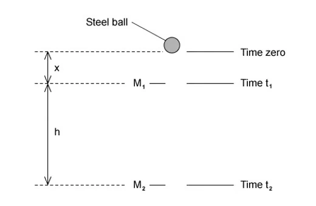
Example 18 · 2.1 MC Hard Q6
A sprinter runs a \(200\ \mathrm{m}\) race in a straight line. He accelerates from the starting block at a constant acceleration of \(2.5\ \mathrm{m\,s^{-2}}\) to reach his maximum speed of \(10\ \mathrm{m\,s^{-1}}\). He maintains this speed until he crosses the finish line. Which time does it take the sprinter to run the race?
Example 19 · 2.1 MC Hard Q7
In order that a train can stop safely, it will always pass a signal showing a yellow light before it reaches a signal showing a red light. Drivers apply the brake at the yellow light and this results in a uniform deceleration to stop exactly at the red light. The distance between the red and yellow lights is \(x\). What must be the minimum distance between the lights if the train speed is increased by \(25\%\), without changing the deceleration of the trains?
Example 20 · 2.1 MC Hard Q9
An aeroplane travels at an average speed of \(700\ \mathrm{km\,h^{-1}}\) on an outward flight and at \(300\ \mathrm{km\,h^{-1}}\) on the return flight over the same distance. What is the average speed of the whole flight?
Structured Questions
每道题均按原题的子题结构保留；连续小题使用独立列表显示。
Easy · 4 questions
Example 1 · Distance, displacement, speed and velocity · 2.1 SQ Easy Q1(a)
State the difference between:
- distance and displacement;
- speed and velocity.
[4 marks]
Show mark scheme / model answer
(i) Distance and displacement
- Distance is the total path length travelled and is a scalar.
[1] - Displacement is the change in position in a specified direction and is a vector.
[1]
(ii) Speed and velocity
- Speed is distance travelled per unit time and is a scalar.
[1] - Velocity is the rate of change of displacement and is a vector.
[1]
Example 2 · Scalars and vectors · 2.1 SQ Easy Q2(a)
Place ticks in the table to indicate which of the quantities are vectors and which are scalars.
| velocity | speed | distance | displacement | acceleration | |
|---|---|---|---|---|---|
| vector | |||||
| scalar |
[2 marks]
Show mark scheme / model answer
- Vectors: velocity, displacement and acceleration.
[1] - Scalars: speed and distance.
[1]
Example 3 · Uniform acceleration and SUVAT · 2.1 SQ Easy Q2(b)
Two of the equations of uniformly accelerated motion are
\[s=ut+\frac12at^2\] \[v^2=u^2+2as.\]
State:
- the definition of uniform acceleration;
- the two other equations of motion that can be used to derive the above equations.
[3 marks]
Show mark scheme / model answer
(i)
- Uniform acceleration means that velocity changes by equal amounts in equal time intervals.
[1]
(ii)
- \(v=u+at\).
[1] - \(s=\dfrac{u+v}{2}t\).
[1]
Example 4 · Stone dropped into a well · 2.1 SQ Easy Q3(a)-(b)
A student drops a stone into a well and measures the time it takes to hear the stone splash at the bottom.
-
Explain how this measurement of time can be used to find the depth of the well.
[3 marks] -
It takes \(3.2\ \mathrm{s}\) for the stone to drop from rest and splash into the water at the bottom. Calculate the speed of the stone when it hits the water.
[2 marks]
Show mark scheme / model answer
(a)
- Treat the stone as starting from rest and accelerating uniformly at \(g\).
[1] - Use \(s=ut+\frac12gt^2\) with \(u=0\).
[1] - Hence depth \(s=\frac12gt^2\); if the measured time includes the sound’s return time, correct for that before substitution.
[1]
(b)
- \(v=u+gt=0+9.81(3.2)\).
[1] - \(v=31.4\ \mathrm{m\,s^{-1}}\approx31\ \mathrm{m\,s^{-1}}\) downward.
[1]
Medium · 3 questions
Example 5 · Projectile motion to a wall · 2.1 SQ Medium Q1
(a) Define acceleration. [1 mark]
(b) A ball is kicked from horizontal ground towards a vertical wall, as shown in Fig. 1.1. The horizontal distance between the initial position of the ball and the base of the wall is \(24\ \mathrm{m}\). The ball is kicked with an initial velocity \(v\) at an angle of \(28^\circ\) to the horizontal. The ball hits the top of the wall after a time of \(1.5\ \mathrm{s}\). Air resistance is negligible.
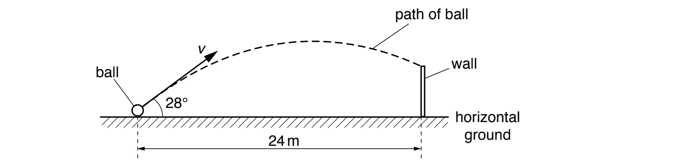
-
Calculate the initial horizontal component \(v_x\) of the velocity of the ball.
[1 mark] -
Show that the initial vertical component \(v_y\) of the velocity of the ball is \(8.5\ \mathrm{m\,s^{-1}}\).
[2 marks] -
Calculate the time taken for the ball to reach its maximum height above the ground.
[2 marks] -
The ball is kicked at time \(t=0\). Assume that the vertical component \(v_y\) of the velocity of the ball is positive in the upwards direction. On Fig. 1.2, sketch the variation with time \(t\) of \(v_y\) for the time until the ball hits the wall.
[2 marks]
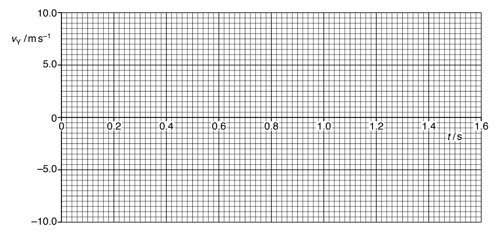
(c)
-
Calculate the maximum height above the ground of the ball in (b).
[2 marks] -
The maximum gravitational potential energy of the ball above the ground is \(22\ \mathrm{J}\). Calculate the mass of the ball.
[2 marks]
(d) A ball of greater mass is kicked with the same velocity as the ball in (b). Air resistance is still negligible. State and explain the effect, if any, of the increased mass on the time taken by the ball to reach its maximum height. [1 mark]
Show mark scheme / model answer
(a)
- Acceleration is the rate of change of velocity.
[1]
(b)(i)
- Horizontal velocity is constant, so \(v_x=24/1.5=16\ \mathrm{m\,s^{-1}}\).
[1]
(b)(ii)
- \(\tan28^\circ=v_y/v_x\).
[1] - \(v_y=16\tan28^\circ=8.5\ \mathrm{m\,s^{-1}}\).
[1]
(b)(iii)
- At maximum height, vertical velocity is zero.
[1] - \(t=v_y/g=8.5/9.81=0.87\ \mathrm{s}\).
[1]
(b)(iv)
- Draw a straight line with gradient \(-g\).
[1] - It starts at \(+8.5\ \mathrm{m\,s^{-1}}\) and reaches about \(-6.2\ \mathrm{m\,s^{-1}}\) at \(1.5\ \mathrm{s}\).
[1]
(c)(i)
- \(0=8.5^2-2gH\).
[1] - \(H=3.7\ \mathrm{m}\).
[1]
(c)(ii)
- \(E_p=mgH\), so \(m=22/(9.81\times3.7)\).
[1] - \(m\approx0.61\ \mathrm{kg}\).
[1]
(d)
- There is no effect: gravitational acceleration and the time to maximum height are independent of mass when air resistance is negligible.
[1]
Example 6 · Horizontal projection from a cliff · 2.1 SQ Medium Q3
A ball is projected horizontally at \(27\ \mathrm{m\,s^{-1}}\) from a vertical cliff. It travels a horizontal distance of \(40\ \mathrm{m}\) before hitting the ground. Assume that air resistance is negligible.
-
Calculate the vertical velocity of the ball just before it hits the ground.
[4 marks] -
Calculate the height of the cliff.
[2 marks] -
Sketch the graphs to show how the horizontal and vertical components of the velocity of the ball, \(v_x\) and \(v_y\), change with time \(t\) just before the ball hits the ground. Label any appropriate values on the axes.
[3 marks] -
Calculate the resultant velocity of the ball just before it hits the ground.
[2 marks]
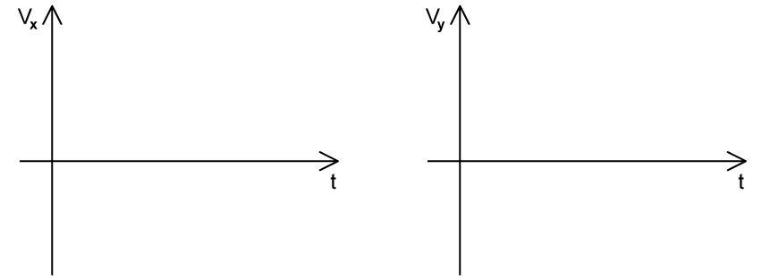
Show mark scheme / model answer
(a)
- Horizontal velocity is constant, so \(t=40/27=1.48\ \mathrm{s}\).
[2] - \(v_y=gt=9.81(1.48)=14.5\ \mathrm{m\,s^{-1}}\) downward.
[2]
(b)
- \(h=\frac12gt^2\).
[1] - \(h=\frac12(9.81)(1.48)^2=10.8\ \mathrm{m}\).
[1]
(c)
- \(v_x\) is a horizontal line at \(27\ \mathrm{m\,s^{-1}}\).
[1] - \(v_y\) is a straight line of gradient \(-g\), from \(0\) to \(-14.5\ \mathrm{m\,s^{-1}}\).
[2]
(d)
- \(v=\sqrt{27^2+14.5^2}\).
[1] - Resultant speed \(\approx30.6\ \mathrm{m\,s^{-1}}\approx31\ \mathrm{m\,s^{-1}}\).
[1]
Example 7 · Deriving equations of motion · 2.1 SQ Medium Q4(a)
A particle moves in a straight line with a constant acceleration \(a\). The initial velocity of the particle at \(t=0\) is \(u\). After a further time \(t\), its velocity has increased to \(v\).
-
Using the definition of acceleration, show that \(v=u+at\).
[2 marks] -
Using the definition of average velocity, show that \(s=ut+\frac12at^2\).
[3 marks] -
Using these two equations, show that \(v^2=u^2+2as\).
[3 marks]
Show mark scheme / model answer
(i)
- \(a=(v-u)/t\).
[1] - Rearranging gives \(v=u+at\).
[1]
(ii)
- For constant acceleration, average velocity \(=(u+v)/2\), so \(s=(u+v)t/2\).
[1] - Substitute \(v=u+at\).
[1] - \(s=\frac12[u+(u+at)]t=ut+\frac12at^2\).
[1]
(iii)
- From \(v=u+at\), \(t=(v-u)/a\).
[1] - Substitute into \(s=(u+v)t/2\).
[1] - \(s=(u+v)(v-u)/(2a)=(v^2-u^2)/(2a)\), hence \(v^2=u^2+2as\).
[1]
Hard · 3 questions
Example 8 · Fireworks display · 2.1 SQ Hard Q1
During a fireworks display, a firework is launched into the air and explodes once it reaches a maximum height of \(250\ \mathrm{m}\). The vertical component of the velocity at launch depends on both the initial velocity of the firework and the angle \(\theta\) between the initial velocity and the horizontal. The maximum initial velocity a firework can be launched at is \(110\ \mathrm{m\,s^{-1}}\).
-
Calculate the initial launch velocity for a firework that is fired directly upwards.
[2 marks] -
Show that the minimum launch angle between the initial velocity and the horizontal to reach \(250\ \mathrm{m}\) is about \(40^\circ\).
[3 marks]
(b) On Fig. 1.1, sketch the variation of angle \(\theta\) with the initial velocity required for the firework to reach the maximum height of \(250\ \mathrm{m}\). Include values from (a) on the axes. [4 marks]
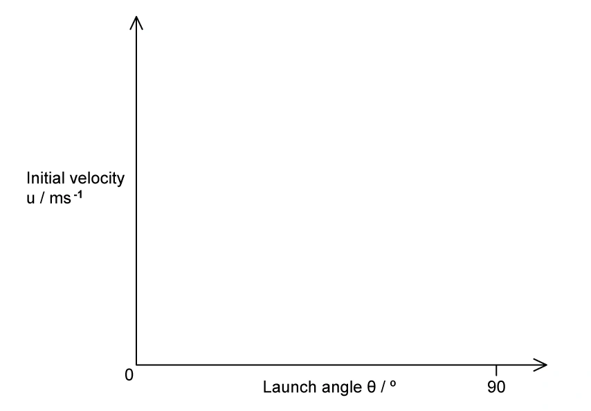
(c) The length of the fuse within the firework is chosen to ensure it explodes just as it reaches its highest point above the ground. The firework is launched into the air at an angle of \(75^\circ\) to the horizontal, as shown in Fig. 1.2. The firework contains a fuse with a burn rate of \(1.5\ \mathrm{cm\,s^{-1}}\). Determine the length of the fuse used in the firework. [4 marks]
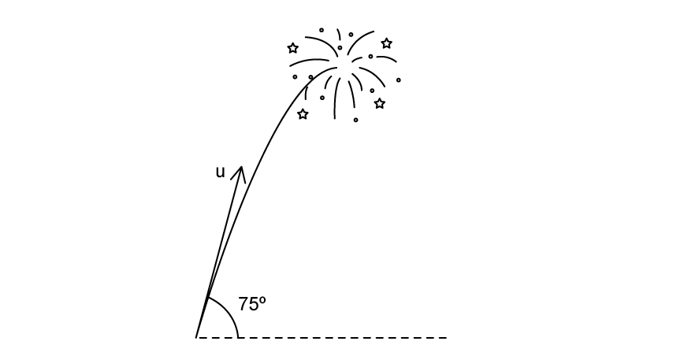
(d) During the display, one of the fireworks is lit but falls over before launching. When it launches, it leaves the ground with an initial velocity of \(75\ \mathrm{m\,s^{-1}}\) at an angle of \(30^\circ\) to the horizontal, as shown in Fig. 1.3. The firework moves in the direction of a hill. The side of the hill is inclined at \(8.5^\circ\) to the horizontal. Deduce whether the firework ignites before it lands on the hillside. [4 marks]
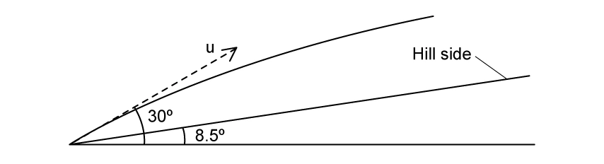
Show mark scheme / model answer
(a)(i)
- At maximum height, \(v=0\), so \(0=u^2-2g(250)\).
[1] - \(u=70.0\ \mathrm{m\,s^{-1}}\).
[1]
(a)(ii)
- Required vertical component is \(70.0\ \mathrm{m\,s^{-1}}\).
[1] - \(110\sin\theta=70.0\).
[1] - \(\theta=39.5^\circ\approx40^\circ\).
[1]
(b)
- Draw a decreasing curve because \(u\sin\theta=70.0\).
[1] - Include \((40^\circ,110\ \mathrm{m\,s^{-1}})\) and \((90^\circ,70\ \mathrm{m\,s^{-1}})\).
[2] - The curve approaches but does not meet the velocity axis.
[1]
(c)
- At \(75^\circ\), the required launch speed is \(u=70.0/\sin75^\circ=72.5\ \mathrm{m\,s^{-1}}\).
[1] - Time to maximum height \(=72.5/9.81=7.4\ \mathrm{s}\).
[2] - Fuse length \(=1.5\times7.4=11.1\ \mathrm{cm}\).
[1]
(d)
- Maximum height for the fallen firework \(=(75\sin30^\circ)^2/(2g)=71.7\ \mathrm{m}\).
[1] - In \(7.4\ \mathrm{s}\), horizontal distance \(=75\cos30^\circ(7.4)=481\ \mathrm{m}\).
[1] - Hill height there \(=481\tan8.5^\circ=71.9\ \mathrm{m}\).
[1] - These heights are approximately equal, so the firework ignites just as it reaches the hillside.
[1]
Example 9 · Stunt motorcyclist · 2.1 SQ Hard Q2
Fig. 1.1 shows a stunt motorcyclist descending down a ramp. The motorcyclist starts from rest at the top of the ramp at A and leaves the ramp at B horizontally. After leaving the ramp at B, the motorcyclist lands on the ground at C, which is \(6.4\ \mathrm{m}\) away. At C, the motorcyclist lands with a resultant velocity of \(13.4\ \mathrm{m\,s^{-1}}\) at an angle of \(29.5^\circ\) with the horizontal. Calculate the initial velocity of the motorcyclist at B. Assume that air resistance is negligible. [4 marks]
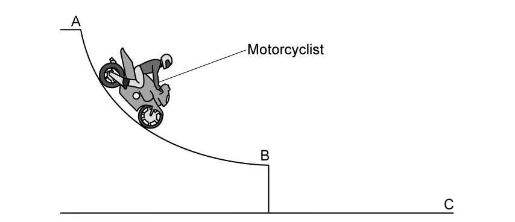
The motorcyclist practises a stunt on a different ramp inclined at \(25^\circ\) and \(3\ \mathrm{m}\) high. The other ramp is \(24\ \mathrm{m}\) away and has a height of \(1\ \mathrm{m}\). Calculate the minimum initial velocity the motorcyclist requires in order to reach the other ramp. [4 marks]
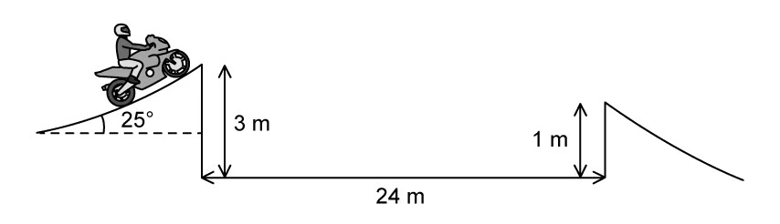
The stunt motorcyclist’s ultimate goal is to jump across a river and land on the other side. The ramp is at an angle of \(25^\circ\) to the horizontal and the height at the end of the ramp is \(3.0\ \mathrm{m}\). The width of the river is \(100\ \mathrm{m}\). The initial velocity of the motorcyclist is \(35\ \mathrm{m\,s^{-1}}\).
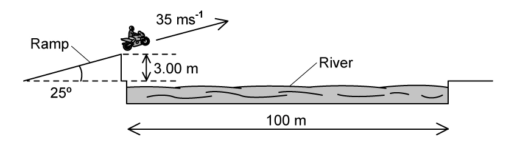
-
Deduce whether the motorcyclist lands on the other side of the river.
[4 marks] -
Explain how air resistance would affect the jump.
[3 marks]
Show mark scheme / model answer
(a)
- Vertical component at C: \(v_y=13.4\sin29.5^\circ=6.6\ \mathrm{m\,s^{-1}}\).
[1] - Since initial vertical velocity at B is zero, \(t=v_y/g=0.673\ \mathrm{s}\).
[1] - Horizontal velocity \(u_x=6.4/0.673=9.5\ \mathrm{m\,s^{-1}}\).
[2]
(b)
- Resolve launch velocity: \(u_x=u\cos25^\circ\), \(u_y=u\sin25^\circ\).
[1] - Use the horizontal separation \(24\ \mathrm{m}\) and vertical displacement \(-2\ \mathrm{m}\).
[1] - Solving the horizontal and vertical equations gives \(t\approx1.64\ \mathrm{s}\).
[1] - Minimum initial velocity \(u\approx16\ \mathrm{m\,s^{-1}}\).
[1]
(c)(i)
- \(u_x=35\cos25^\circ=31.7\ \mathrm{m\,s^{-1}}\) and \(u_y=35\sin25^\circ=14.8\ \mathrm{m\,s^{-1}}\).
[1] - Time to travel \(100\ \mathrm{m}\) horizontally \(=100/31.7=3.155\ \mathrm{s}\).
[1] - Vertical displacement \(=14.8(3.155)-\frac12(9.81)(3.155)^2=-2.13\ \mathrm{m}\).
[1] - This is less than the \(3.0\ \mathrm{m}\) ramp height, so the rider lands on the far side.
[1]
(c)(ii)
- Air resistance opposes the rider’s motion.
[1] - It reduces horizontal speed and range.
[1] - The rider is therefore more likely to fall short of the far bank.
[1]
Example 10 · Motion close to the Moon · 2.1 SQ Hard Q3
An object is released near the surface of the Moon at time \(t=0\). Fig. 1.1 shows the variation of displacement \(s\) with time \(t\) of the object from the point of release.
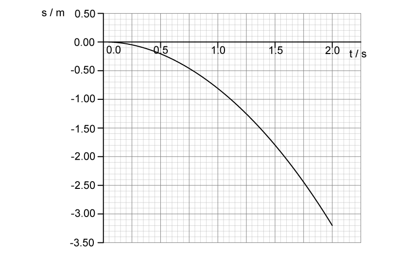
-
State the significance of the negative values of \(s\), and state two assumptions about the motion of the object.
[3 marks] -
Use the graph in Fig. 1.1 to determine a value for the acceleration of free fall close to the surface of the Moon.
[2 marks] -
Use Fig. 1.1 to estimate the instantaneous velocity of the object when \(t=1.5\ \mathrm{s}\).
[3 marks] -
On Fig. 1.1, sketch the variation of displacement with time \(t\) if the same object was released close to the surface of the Earth instead. Describe and explain the features of your sketch.
[4 marks]
Show mark scheme / model answer
(a)
- Negative displacement means motion below the release point, towards the Moon.
[1] - Suitable assumptions: negligible air resistance and constant gravitational acceleration near the surface.
[2]
(b)
- Read a displacement-time pair from the graph and use \(s=\frac12at^2\).
[1] - This gives \(g_{\text{Moon}}\approx1.6\ \mathrm{m\,s^{-2}}\).
[1]
(c)
- Draw a tangent at \(t=1.5\ \mathrm{s}\).
[1] - Calculate its gradient, \(\Delta s/\Delta t\).
[1] - Instantaneous velocity \(\approx-2.4\ \mathrm{m\,s^{-1}}\).
[1]
(d)
- Draw a curve through the origin with the same negative direction but a much steeper gradient.
[2] - Earth’s gravitational acceleration is larger, so displacement magnitude and speed increase more rapidly.
[2]
章末自检
原始专题 PDF
- 2.1 Equations of Motion: MC Easy · MC Medium · MC Hard
- 2.1 Equations of Motion: SQ Easy · SQ Medium · SQ Hard
Content basis: Cambridge International AS & A Level Physics 9702 syllabus (2025-2027), section 2.1; local note Note/2.1 Equations of Motion.pdf.pdf and local topical past-paper packs under PastPaper/Topical Past Papers/AS/2.1 Equations of Motion.